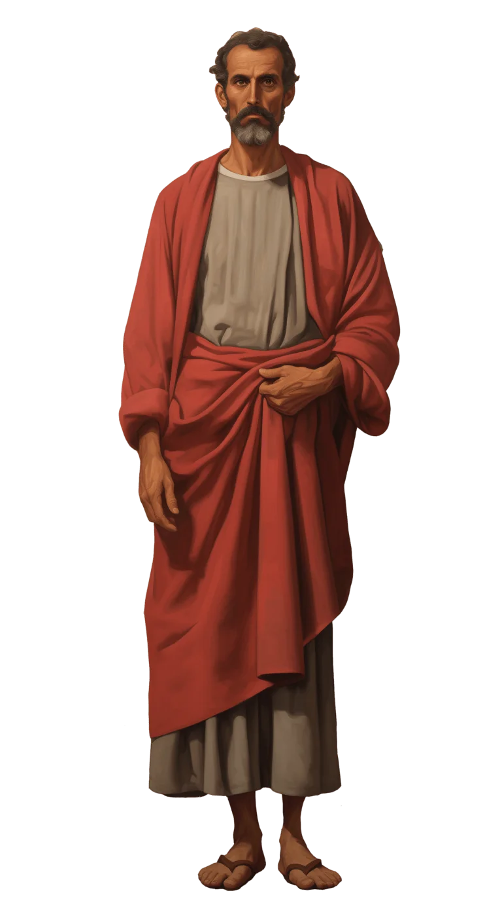

The Story of Thomas - The Apostle of Belief
Creating short Vox-style animations about Saint Thomas the Apostle was a fascinating experience. The clean, minimalist form allowed me to capture his emotions, doubts, and faith in a way that feels authentic and deeply human.
Each 10-second clip reflects a key moment of his spiritual journey, turning simplicity into depth.
For the Bible Unbound project, these animations became more than visuals — they became a bridge between story and reflection. Through them, viewers can rediscover the Apostle’s path and be inspired to explore their own journey of belief.
